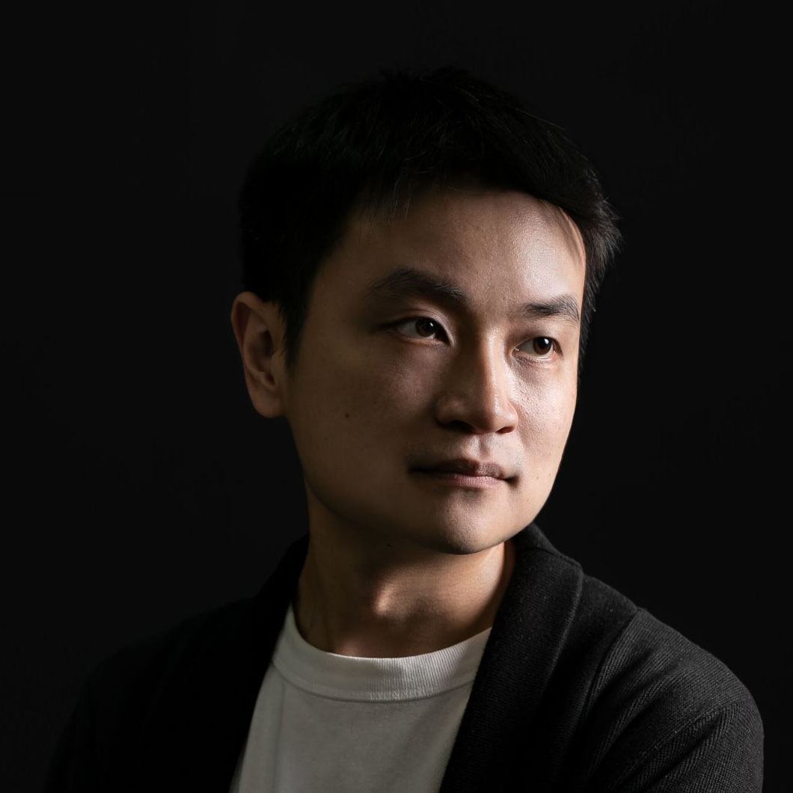
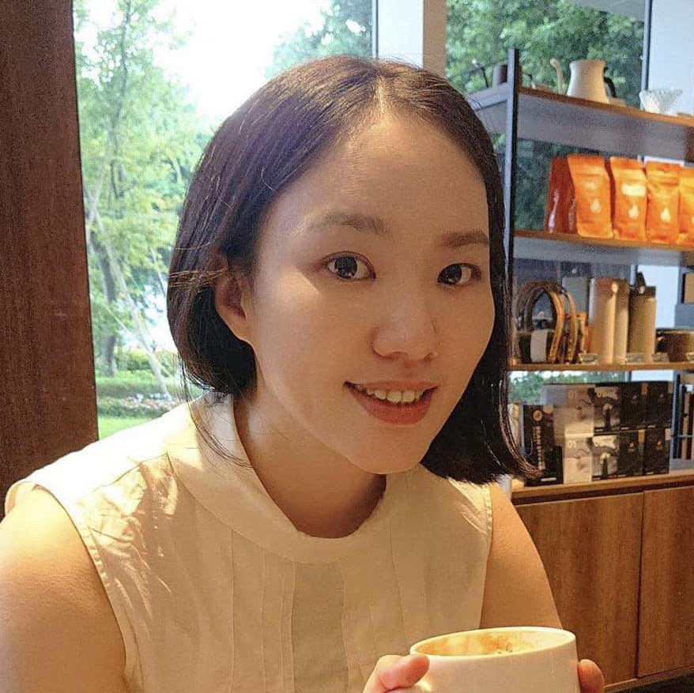

CURATORIAL STATEMENT
In an era of rapid advances in artificial intelligence and information technology, a form of existence has emerged that has yet to be fully identified. It operates within the ocean of information, generating previously unseen forms amid vast streams of data and algorithms, and quietly fitting itself into the world we inhabit.
Taking "Gray Autonomous Entity" as its theme, the 2026 Taipei Digital Art Festival examines how digital art, amid the rapid development of AI, might rethink a new kind of agency, a new set of environmental relations, and new artistic questions: ones that are difficult to grasp clearly, that keep evolving, and that cannot be avoided.
As AI becomes a new kind of entity that shapes artists' everyday experience and even their creative work, how should digital art respond to a presence that is different from what tools and media have constituted?
It produces an experience that feels both familiar and strange. It is familiar because it draws on the data and memories that humanity has accumulated in common; it is strange because of the emergence of autonomy.
As data is encoded and compressed into models and transformed into high-dimensional vector spaces, images, language, and sound form new relations of proximity with one another, and the system develops its own generative capacity through immense computation. Each act of generation reorganizes collective experience. Yet the model, while carrying data, memory, and culture, also harbors power structures, biases, and ethical problems.
Like plants, soil, mycelium, animals, humans, and machines, it has now become part of what constitutes the environment. Together with all kinds of organic life and nonhuman actors, it forms a complex network, becoming one node within it and redefining the relationships among life, technology, and environment.
This has also become an issue that contemporary digital art cannot avoid: when art involves data sampling, model training, and the operation of latent space and generative algorithms, is it still human-centered? How should the art world respond? Furthermore, long-standing concepts in art, such as authorship, creativity, originality, and artistic form, are being re-examined as a result.
Through generative imagery, machine learning, interactive installations, and human-machine systems, the festival focuses on artistic practices that rethink information, ecology, life, and nonhuman existence, and seeks to map a new ecology composed jointly of humans, AI, and diverse forms of life. This is the focus of the 2026 Taipei Digital Art Festival, "Gray Autonomous Entity."
CURATORS

Lien-cheng Wang
Taiwan
Lien-cheng Wang is a new media artist, educator, and audiovisual performer. He is currently a full-time Assistant Professor in the Department of New Media Art at Taipei National University of the Arts. His practice focuses on interactive installation, sound, algorithmic imagery, and machine perception, with a long-standing interest in how technology intervenes in human perception, bodily experience, and social relations. Through programming, mechanical systems, and real-time computation, he develops interdisciplinary works across multiple media. His honors include First Prize in the Interactive Installation category of the Taipei Digital Art Awards, First Prize in the Taipei Digital Art Performance Awards, the 3D/Sculpture Award at the UK-based Lumen Prize, and First Prize in the Taipei Art Awards.
2025 Beyond the Machine, Kuandu Museum of Fine Arts, Taipei, Taiwan.
2023 BIENAL MADATAC #12, hispanoamérica, Madrid, Spain.
2019 PROYECTOR 2019, Medialab Prado, Madrid, Spain.
2018 Taipei Art Award, The First Prize, Taipei, Taiwan.
2018 12th Arte Laguna Prize, Nappe Arsenale Nord, Venice, Italy.
2017 Lumen Matrix - Lumen Prize for Digital Art, Today Art Museum, Beijing, China.
2017 Poland digital art festival, Małopolski Ogród Sztuki, Krakow, Poland.
2017 Ars Electronica Festival, Post City, Linz, Austria.
2017 The 4th Media Art, Gwangju Museum of Art, Gwangju, South Korea.
2017 Lumen Prize, The winner of 3D/Sculpture award, London, United Kingdom.
2017 YICCA International competition, The Rooster Gallery, Vilnius, Lithuania.
2016 UPDATE_6, Ghent, Belgium.
2013 Digital Art Performence Award, Taipei.
2009 Digital Art Festival Taipei 2009, The First Prize of Interactive installations, Taipei, Taiwan.

Yen-Ju Lin
Taiwan
Yen-Ju Lin is a new media artist, curator, and researcher. She holds an MFA in New Media Arts and a PhD in Fine Arts from Taipei National University of the Arts. Her artistic, curatorial, and research practices traverse art, information technology, and cosmological thought, examining how information, media, and systems shape both the world and artistic practice. Her work explores the relations between the real and the virtual, the visible and the invisible, and the human and the inhuman.
Grounded in her experience as an artist, Lin approaches curating as an artistic practice and a mode of creation, conceiving the exhibition as a generative field in which invisible relations and possibilities can emerge and take form. Her co-curatorial projects include Kuandu Light Art Festival – Quantum Entanglement, Zhongshan Hǎo Róng Yì – Outdated Daily, and Epicentrum, Observer Pattern, Echo Toward the Stargate, and Computational Evolution at Ars Electronica in Linz. She also curated Signal World [REC].
2026, Computational Evolution, Ars Electronica Campus, Linz, Austria
2025, Echo Toward the Stargate, Ars Electronica Campus, Linz, Austria
2024, Observer Pattern, Ars Electronica Campus, Linz, Austria
2023, Epicentrum, Ars Electronica Campus, Linz, Austria
2021, 2021 Zhongshan Hao Rong Yi – Outdated Daily, Zhongshan District, Taipei, Taiwan
2020, 2020 Kuandu Light Art Festival – Quantum Entanglement, Kuandu Museum of Fine Arts, Taipei, Taiwan
Curatorial Projects
2026, The 7th SLY Art Space Media and Moving Image Exhibition — Signal World [REC], SLY Art Space, Taoyuan, Taiwan
Journal Articles
2024, “Trans-dimensional Messenger: Artworks as a Media for Information Transmission”, Journal of Taiwanese Art, No. 129, National Taiwan Museum of Fine Arts.
Solo Exhibitions
2017, Long Stay – Yen-Ju Lin Solo Exhibition, FreeS Art Space, Taipei, Taiwan
Selected Group Exhibitions
2026, Can You See Me Now?, The Gem Theater / VTIFF, Bethel, ME / Burlington, VT, USA
2024, The Interest from the Street Corner, MOCA Taipei, Taipei, Taiwan
2021, Non-syntax, Calm & Punk Gallery / BnA Museum / Workshop Underground, Tokyo / Kyoto / Fukuoka, Japan
2021, Groundless, Pa Ta Taipei – PTT Space, Taipei, Taiwan
2013–2015, Schizophrenia Taiwan 2.0, Ars Electronica / transmediale / Maison des Métallos / Ambika P3 / Instants Video Festival / HELLERAU – European Centre for the Arts, Linz / Berlin / Paris / London / Marseille / Dresden, Austria / Germany / France / United Kingdom / France / Germany
2013, 8th Digital Art Festival Taipei – Data-Neurons, Songshan Cultural and Creative Park, Taipei, Taiwan